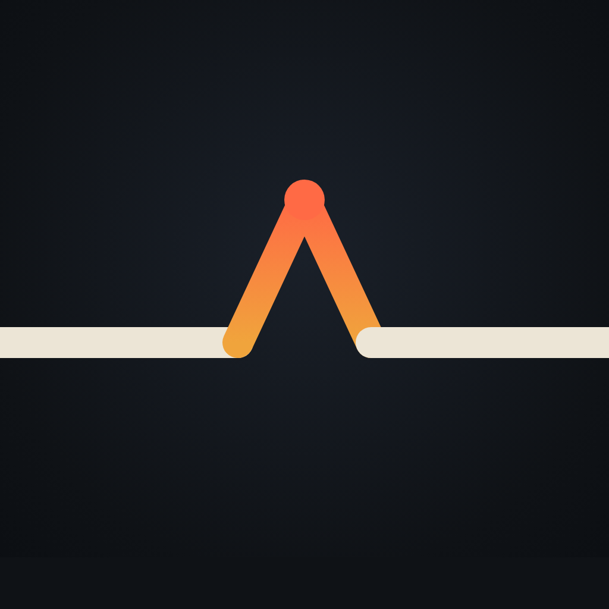
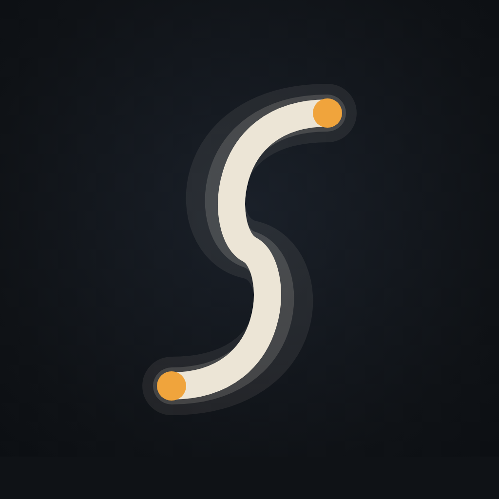
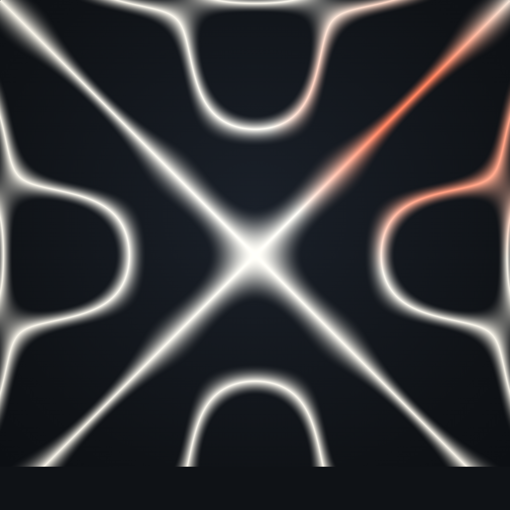
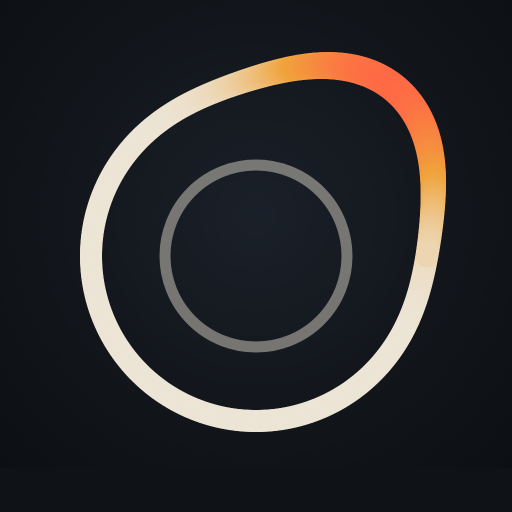

Each at 200px, 64px, 32px. All survive a round crop. Ember on graphite, no text in the mark.

1 · current — crossing waves
Two signals interleaving. Striking, but reads more “audio brand” than machine-health, and isn't tied to the site's Chladni identity.

2 · the drift mark
The product in one gesture: a calm baseline, one warning spike, and life goes on. The red node is the moment Sentys speaks.

3 · standing S
Sentys' S as a standing wave pinned between two nodes. A lettermark, so it always says the name, but the softest of the five.

4 · nodal tile
The hero's own physics: real Chladni nodal lines, one flank heating. Most tied to the site, most textural, softest at 32px.

5 · the drifted orbit
A machine's normal is an orbit; drift is one arc leaving it, heating as it goes. Baseline ring inside for calm. Cleanest at every size.